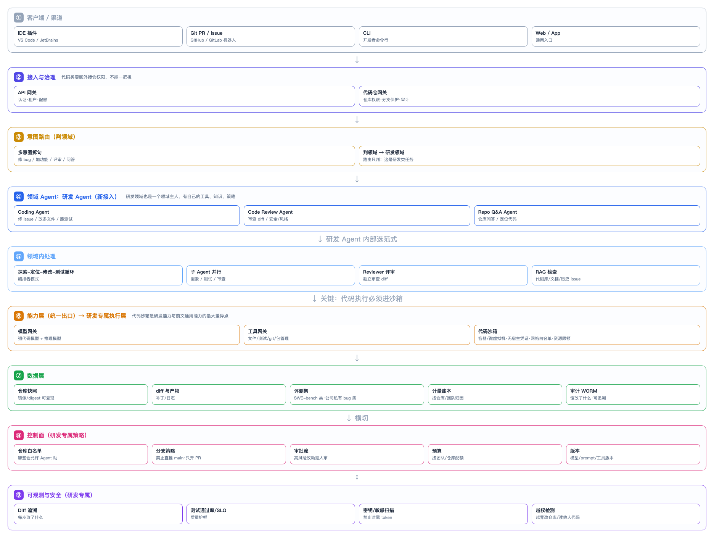

把 Coding 能力接进平台
先给结论
Coding 不是一种新范式，而是一个「领域 Agent」。 它按领域 Agent 版架构接入：意图路由判到"研发领域"，进入研发 Agent，研发 Agent 内部按任务选范式（探索-定位-修改-测试循环 = 编排者模式）。
它和前文通用能力唯一的本质差异是：代码必须在专门沙箱里执行，而且要额外的仓库权限与分支保护。
一图看懂

图 1 · 研发 Agent 作为领域接入：路由判领域 → 研发 Agent 选范式 → 代码沙箱执行 → 仓库权限与审计兜底
接入方式：作为「研发领域」注册
在领域 Agent 层新增一个研发领域，和售后、技术支持并列：
# 领域注册（伪代码，对应 enterprise-architecture 的 ④ 层）
domains = {
"after_sales": AfterSalesAgent(...),
"tech_support": TechSupportAgent(...),
"research_dev": ResearchDevAgent( # ← 新增
coding=CodingAgent(...),
review=CodeReviewAgent(...),
repo_qa=RepoQAAgent(...),
),
}
路由只需在意图表里加一条：命中"修 bug / 加功能 / 评审 / 仓库问答"→ 研发领域。路由逻辑不增加复杂度，因为领域数从 3 变 4，不是组合数爆炸。
三个关键差异点
1. 代码沙箱（最重要）
通用能力层已有沙箱，但代码场景对沙箱的要求更严：
| 要求 | 为什么 |
|---|---|
| 无宿主凭证 | 仓库 token 不能进沙箱，否则 Agent 能推任意分支 |
| 网络白名单 | 只允许拉依赖的源，禁止外发（防数据外泄） |
| 资源限额 | 编译/测试可能吃满 CPU 内存，必须硬限 |
| 镜像 digest 固定 | 同一个 issue 今天跑和明天跑结果要一致 |
| 文件系统隔离 | 只能看到被授权的仓库，看不到宿主机其他代码 |
对应到图里的「代码沙箱」节点。这是研发能力区别于其他领域最硬的一处。
2. 仓库权限：独立的「代码仓网关」
代码类请求不能只过 API 网关，还要过一层代码仓网关：
- 仓库白名单：哪些仓库允许 Agent 动（不是所有仓都开放）
- 分支保护：禁止直推 main，只允许开 PR
- 最小权限：Agent 只能读被授权的仓库，写只能写自己开的 PR 分支
- 审计：每次读写了哪个仓、哪个分支、哪个 commit，全记录
反模式：给 Coding Agent 一个"能访问所有仓库的 bot token"。一旦被提示注入，它能改任意代码库。
3. 评测：用可验证的成功标准
Coding 是所有 Agent 场景里最幸运的——成功标准是客观的：
测试通过 + 构建成功 + lint 干净 + 不回归
所以它的评测集就是真实 issue + 对应测试：
- 公开基准：SWE-bench 类（判断模型能力）
- 公司私有 bug 集：真实历史 issue（判断实际效果，必须有）
- 回归集：改一个 bug 不能弄坏别的功能
没有私有评测集的 Coding Agent 不能上线——否则你不知道它是在修 bug 还是在制造 bug。
研发 Agent 内部的范式选择
研发 Agent 是"领域主人"，它按具体任务选范式：
| 任务 | 用法 | 对应范式 |
|---|---|---|
| 修一个 issue / 改多文件 | 探索→定位→修改→测试→修复 循环 | Orchestrator 编排者 |
| 大重构 / 跨模块 | 拆子任务并行处理 | Supervisor |
| 代码审查 | 独立 Reviewer 审 diff | Evaluator 生成-评审 |
| 仓库问答 / 定位代码 | 检索代码库 | RAG（代码检索） |
| 两种改法选一个 | 多方案对比 | Arena |
这就是为什么说"Coding 不是新范式"——它复用现有范式，只是换了个领域和一套更专用的执行环境。
一次 Coding 请求的完整路径
1. 触发 开发者在 IDE / 在 issue 里 @agent / 提交 PR
2. 接入 API 网关（租户配额）+ 代码仓网关（仓库白名单·分支保护）
3. 路由 意图 = 研发领域
4. 领域 研发 Agent 收到请求
5. 选范式 任务=修 issue → 起"探索-定位-修改-测试"编排
6. 执行 在代码沙箱里：读文件→改文件→跑测试（无宿主凭证·网络白名单）
7. 能力 模型网关（强代码模型）+ 工具网关（文件/测试/git）
8. 产出 生成 diff → 开 PR（不直推）→ 请求人工 review
9. 横切 全程 trace；diff 可追溯；密钥扫描；越权检测
10. 回流 失败 issue 进私有评测集 → 下次发布门禁
平台化的收益（为什么值得做成平台）
| 单点工具 | 平台化后 |
|---|---|
| 每个团队各自接模型、自己管密钥 | 统一走模型网关，密钥不落地 |
| 用完不知道成本 | 按仓库/团队归因到账本 |
| 改了什么没人知道 | 审计 WORM 可追溯 |
| 各团队重复造沙箱 | 共享沙箱池，统一安全基线 |
| 效果无法衡量 | 统一评测集与门禁 |
平台化的核心不是"多一个大功能"，而是把 Coding 从"某个团队的脚本"变成"有权限、有账本、有审计、有门禁的服务"。
常见坑
| 坑 | 后果 | 正确做法 |
|---|---|---|
| 给 Agent 全能 bot token | 提示注入可改任意仓库 | 仓库白名单 + 最小权限 |
| 允许直推 main | 一次错误改动直接影响生产 | 只开 PR + 分支保护 |
| 代码不在沙箱跑 | 读到宿主密钥、污染环境 | 专用沙箱 + 无宿主凭证 |
| 只测公开 bench | 私有效果不明 | 建公司私有 bug 集 |
| 不记录 diff | 出问题查不到改了什么 | 每步 diff 进审计 |
| 无人工 review | 机械正确但语义错误的改动被合并 | PR 必须人审 |
自检清单
- [ ] 能说出 Coding 为什么是"领域 Agent"而不是"新范式"。
- [ ] 能说出代码沙箱与通用沙箱的三个额外要求。
- [ ] 能解释为什么需要独立的代码仓网关（而不是只有 API 网关）。
- [ ] 能说出 Coding 的成功标准为什么"最可验证"。
- [ ] 能列出平台化相对单点工具的至少三个收益。
- [ ] 能说出"给 Agent 全能 token"为什么会出事。
相关：真实案例拆解 的 Coding Agent 案例、领域 Agent 版架构、运行时与沙箱、范式选型指南。